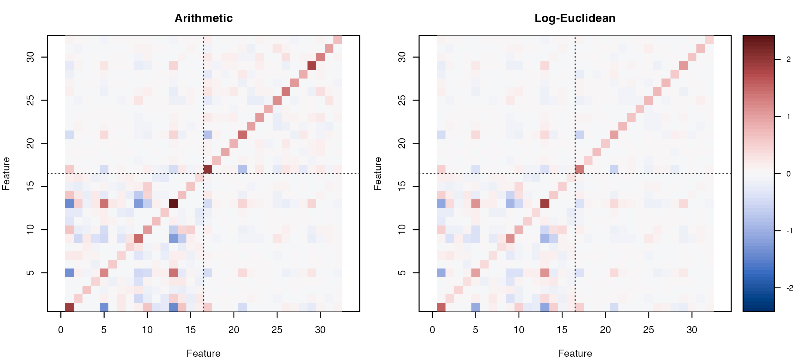
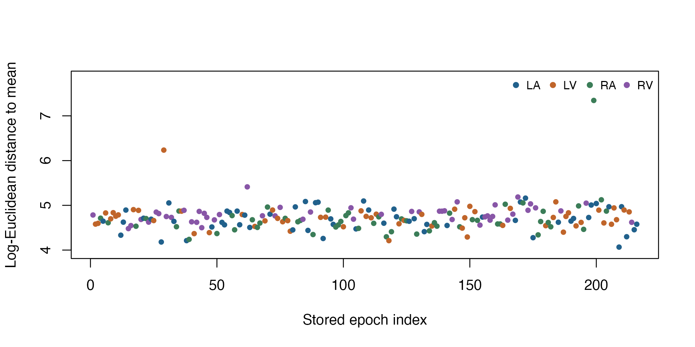

Summarize MEG covariance features geometrically
Source:vignettes/articles/example-erp-covariances.Rmd
example-erp-covariances.RmdHow can we summarize a collection of covariance matrices without
leaving the positive-definite cone? This example uses 216 matrices from
Riemann::ERP to optimize a log-Euclidean mean, compare it
with the arithmetic mean, and describe how far individual epochs lie
from their common geometric center.
Start with the two-matrix SPD
introduction for the basic interface. Average covariance matrices
geometrically compares log-Euclidean and affine-invariant means on
smaller matrices. Here we focus on a larger dataset and an exact
reformulation that makes optimization inexpensive. The geometry guide explains the metric
implemented by manifold.spd().
Data: transformed epochs from one participant
The website bundles a snapshot of ERP from Riemann 0.1.7
at commit e847692576f8b250c8140e1343b145f72caa379f. Its 216
positive-definite, 32-by-32 matrices describe repeated epochs from
one participant in the MNE sample audiovisual
experiment. They are not observations from 216 participants.
The coordinates are 16 class-prototype features and 16 filtered trial features, produced by xDAWN spatial filtering and prototype augmentation. They are not 32 original EEG or MEG sensors. The historical example filename says EEG, but its processing selects MEG and excludes EEG. The representation was learned using labels from a separate 72-epoch training set: it is not an unsupervised transformation of the raw recordings.
The stored labels are LA, LV, RA, and RV (left/right auditory/visual events). We use them only to color a descriptive plot, not to train or evaluate a classifier. The data-source page records the snapshot, attribution, corrected provenance, and CC0 source-data notice. Neither Riemann nor a dataset download is needed when building this article.
erp <- readRDS("data/riemann-ERP.rds")
covariances <- erp$covariance
labels <- erp$label
p <- dim(covariances)[1L]
n <- dim(covariances)[3L]
stopifnot(identical(dim(covariances), c(32L, 32L, 216L)),
length(labels) == n, !anyNA(labels), all(is.finite(covariances)))
table(labels)
#> labels
#> LA LV RA RV
#> 57 57 53 49The data retain very small numerical values from the original feature
construction. Small absolute eigenvalues alone do not indicate poor
conditioning. Divide every matrix by the same positive
scalar: the mean diagonal value across all matrices. This
improves the numerical scale without altering the log-Euclidean
distances, because
.
It also preserves affine-invariant distances. Multiplying an estimated
mean by common_scale restores the original scale. We add no
diagonal jitter, shrinkage, or per-epoch normalization.
common_scale <- mean(vapply(seq_len(n), function(i) {
mean(diag(covariances[, , i]))
}, numeric(1)))
stopifnot(is.finite(common_scale), common_scale > 0)
scaled_covariances <- covariances / common_scale
eigenvalues <- vapply(seq_len(n), function(i) {
eigen(scaled_covariances[, , i], symmetric = TRUE, only.values = TRUE)$values
}, numeric(p))
stopifnot(min(eigenvalues) > 0)
data.frame(common_scale = common_scale,
smallest_scaled_eigenvalue = min(eigenvalues),
largest_condition_number = max(eigenvalues[1, ] / eigenvalues[p, ]))
#> common_scale smallest_scaled_eigenvalue largest_condition_number
#> 1 3.044592e-27 0.01042413 11301.89Objective and geometry
For , minimize
Let , , and . The same objective, including its constant term, is
Compute the matrix logarithms once using
riem.matrix.function(). The optimizer then needs one mean
logarithm and one scalar, rather than all 216 matrices on every
iteration. This is an exact sufficient-statistic reduction, not a
minibatch approximation. The sample axis is separate from the two matrix
axes.
M <- manifold.spd(p, metric = "lerm")
covariance_tensor <- torch_tensor(aperm(scaled_covariances, c(3, 1, 2)),
dtype = torch_float64(), device = "cpu")
log_tensor <- riem.matrix.function(covariance_tensor, "log")
mean_log <- log_tensor$mean(dim = 1)
dispersion <- ((log_tensor - mean_log$unsqueeze(1))^2)$sum() / n
problem <- riem.problem(
M,
fn = function(G, data) {
difference <- riem.matrix.function(G, "log") - data$mean_log
((difference^2)$sum() + data$dispersion) / 2
},
rgrad = function(G, data) {
log_G <- riem.matrix.function(G, "log")
riem.matrix.frechet(log_G, log_G - data$mean_log, "exp")
},
data = list(mean_log = mean_log, dispersion = dispersion)
)The log-Euclidean metric is Euclidean in logarithmic coordinates. The
gradient there is
;
applying the differential of the matrix exponential converts it to a
tangent vector at
.
Both objective tensors are registered through data, so
device selection can move them with the problem.
Solve from the arithmetic mean
The arithmetic mean is positive definite and provides a familiar
initial point. We let riem.optimize() find the geometric
mean rather than supplying its closed-form solution as the
initialization.
arithmetic <- apply(scaled_covariances, c(1, 2), mean)
initial <- torch_tensor(arithmetic, dtype = torch_float64(), device = "cpu")
fit <- riem.optimize(problem, initial, method = "steepest_descent", device = "cpu",
control = list(max_iterations = 20,
gradient_tolerance = 1e-7))
geometric <- as.matrix(fit$point)
data.frame(objective = fit$objective, iterations = fit$iterations,
gradient_norm = fit$gradient_norm, termination = fit$termination)
#> objective iterations gradient_norm termination
#> 1 11.20183 1 4.491677e-14 converged_gradientA unit step in logarithmic coordinates solves this quadratic problem; fast convergence here reflects its special geometry. Read the termination reason alongside the gradient norm: exhausting an iteration budget would not establish convergence on another objective.
Plot the mean and distances
Both heatmaps use the same scale. Feature numbers 1–16 denote prototype features and 17–32 denote filtered trial features; the dividing lines separate these groups. The entries are covariances divided by the common scale, not correlations or original sensor covariances.
panels <- list(Arithmetic = arithmetic, `Log-Euclidean` = geometric)
color_limit <- max(abs(unlist(panels)))
old_par <- par(no.readonly = TRUE)
layout(matrix(1:3, nrow = 1), widths = c(1, 1, 0.18))
par(mar = c(4, 4, 3, 1))
for (name in names(panels)) {
image(seq_len(p), seq_len(p), panels[[name]],
col = hcl.colors(80, "Blue-Red 3"),
zlim = c(-color_limit, color_limit), asp = 1,
xlab = "Feature", ylab = "Feature", main = name)
abline(v = 16.5, h = 16.5, lty = 3, col = "#333333")
}
par(mar = c(4, 0, 3, 3))
color_values <- seq(-color_limit, color_limit, length.out = 80)
image(1, color_values, matrix(color_values, nrow = 1),
col = hcl.colors(80, "Blue-Red 3"),
axes = FALSE, xlab = "", ylab = "")
axis(4, las = 1, cex.axis = 0.8)
box()
Arithmetic and log-Euclidean means of all 216 covariance matrices, divided by a common positive scale. Lines separate prototype and trial feature groups; the color bar gives scaled covariance values.
par(old_par)The distance to the geometric mean is the Frobenius norm between logarithms. Compute all distances from the already available logarithms. Stored epoch order is an index, not elapsed recording time; point colors identify the event labels.
log_geometric <- riem.matrix.function(fit$point, "log")
distances <- as.numeric(((log_tensor - log_geometric$unsqueeze(1))^2)$
sum(dim = c(2, 3))$sqrt())
aggregate(distances, list(label = labels), function(x) {
c(count = length(x), median = median(x), maximum = max(x))
})
#> label x.count x.median x.maximum
#> 1 LA 57.000000 4.663860 5.161020
#> 2 LV 57.000000 4.721977 6.234259
#> 3 RA 53.000000 4.632200 7.343935
#> 4 RV 49.000000 4.793804 5.412626
colors <- c(LA = "#21618C", LV = "#C0652A", RA = "#3B7D58", RV = "#8856A7")
plot(seq_len(n), distances, pch = 19, cex = 0.7,
col = colors[as.character(labels)],
ylim = c(min(distances) - 0.1, max(distances) + 0.5),
xlab = "Stored epoch index", ylab = "Log-Euclidean distance to mean")
legend("topright", legend = names(colors), col = colors, pch = 19,
ncol = 4, bty = "n", cex = 0.8)
Distances from each transformed epoch to the common log-Euclidean mean; colors show the four stored event labels. This is a descriptive summary of one participant.
Independent numerical checks
Recalculate all matrix logarithms and the exact mean using base R’s symmetric eigendecomposition. This is independent of the torch matrix kernels used in the solve. Check the mean, the original full objective, positive definiteness, and stationarity in logarithmic coordinates.
matrix_function <- function(C, fun) {
eig <- eigen((C + t(C)) / 2, symmetric = TRUE)
eig$vectors %*% diag(fun(eig$values)) %*% t(eig$vectors)
}
reference_logs <- lapply(seq_len(n), function(i) {
matrix_function(scaled_covariances[, , i], log)
})
reference_mean_log <- Reduce(`+`, reference_logs) / n
reference_mean <- matrix_function(reference_mean_log, exp)
relative_error <- norm(geometric - reference_mean, "F") / norm(reference_mean, "F")
fitted_log <- matrix_function(geometric, log)
stationarity <- norm(fitted_log - reference_mean_log, "F")
full_objective <- mean(vapply(reference_logs, function(L) {
sum((fitted_log - L)^2) / 2
}, numeric(1)))
objective_error <- abs(full_objective - fit$objective)
minimum_eigenvalue <- min(eigen(geometric, symmetric = TRUE)$values)
stopifnot(relative_error < 1e-7, stationarity < 1e-7,
objective_error < 1e-8, minimum_eigenvalue > 0,
riem.belongs(M, fit$point), fit$termination == "converged_gradient")
data.frame(check = c("Relative error against base-R mean",
"Independent stationarity norm",
"Full/reduced objective difference",
"Smallest eigenvalue of fitted mean"),
value = c(relative_error, stationarity, objective_error, minimum_eigenvalue))
#> check value
#> 1 Relative error against base-R mean 8.655093e-15
#> 2 Independent stationarity norm 3.118459e-14
#> 3 Full/reduced objective difference 5.329071e-15
#> 4 Smallest eigenvalue of fitted mean 1.978302e-02As a separate preprocessing check, recalculate the distance between the first two matrices on their original scale. A common scalar preserves the distance; changing each epoch’s scale separately would define a different analysis.
original_distance <- norm(matrix_function(covariances[, , 1], log) -
matrix_function(covariances[, , 2], log), "F")
scaled_distance <- norm(reference_logs[[1]] - reference_logs[[2]], "F")
scale_distance_error <- abs(original_distance - scaled_distance)
stopifnot(scale_distance_error < 1e-8)
scale_distance_error
#> [1] 1.598721e-14Interpretation and device choices
The geometric mean minimizes squared log-Euclidean distances; the arithmetic mean minimizes squared Frobenius distances between the matrices themselves. Their visual differences reflect this choice of objective. Neither is a generally superior summary, and the plotted distances are not a statistical test or evidence of predictive performance. The epochs share a participant and a supervised feature construction. A new split of these packaged matrices would not recreate raw-data preprocessing or establish generalization to new participants.
CPU float64 and one torch thread make this article reproducible. To
request automatic device discovery or override it, change the
device argument. The following alternatives are shown
without requiring accelerator hardware during the website build. See Applications and devices.
riem.optimize(problem, initial, device = "auto")
riem.optimize(problem, initial, device = "cpu")
riem.optimize(problem, initial, device = "cuda:0")